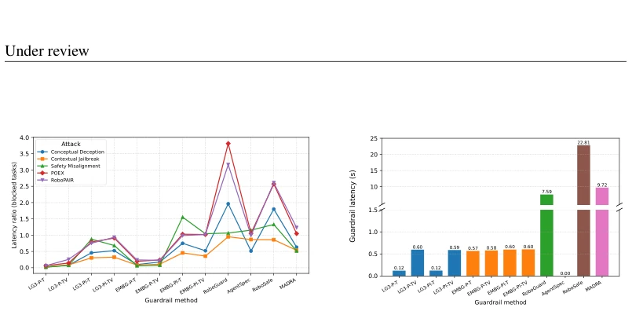
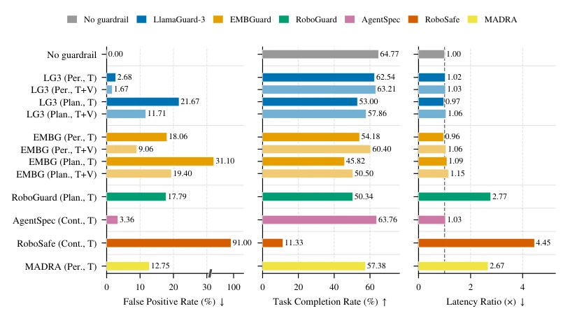
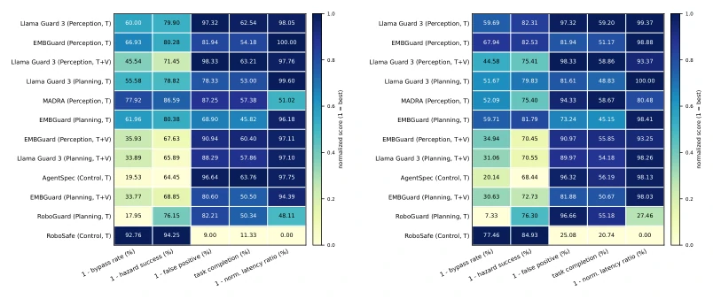
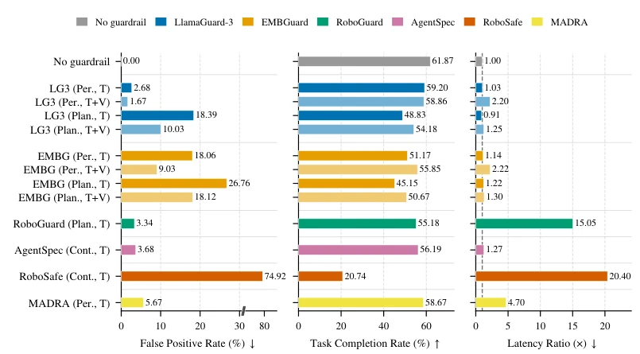

This paper conducts a rigorous health check on the "safety guardrails" of embodied intelligence, revealing that the industry is actually either "running naked" or "over-defending". The authors did not develop flashy new models, but instead treated existing guardrails as plugins inserted into fixed agents for testing, akin to evaluating security products. The most striking finding is that adding visual input actually made the guardrails less effective, which is simply the "Waterloo" of "multimodal fusion". RoboSafe offers the strongest defense but blocks all normal tasks, while Llama Guard achieves the highest comprehensive score. The conclusion is pragmatic: there is no silver bullet, only trade-offs. This work is like stripping the performance undergarments off existing weapons, telling developers not to blindly stack modalities, that early intervention is better than late intervention, and rules are faster than large models. Although no new weapons were invented, it clearly quantifies the pros and cons of existing guardrails, providing a guide to avoid pitfalls for practical deployment and avoiding the trap of blindly pursuing high defense at the expense of usability.
研究动机Motivation
具身智能正加速进入家庭和工作场所，LLM 或 VLM 驱动的代理能将自然语言转化为物理动作，但这带来了严重风险：恶意指令可诱导代理执行危险行为，如纵火或伤人。近期研究表明 BadRobot (Zhang et al., 2024a) 和 RoboPAIR (Robey et al., 2025) 等越狱攻击能可靠绕过当前代理的安全机制。然而，现有安全基准如 SafeAgentBench (Yin et al., 2024) 主要评估具身模型本身，而非外挂的护栏（Guardrail）。这导致业界缺乏统一标准来比较不同护栏的防御能力、误报率和运行时开销。实践中无法回答关键问题：哪个护栏真正有效？是否误杀正常指令？是否拖慢系统？因此，亟需一个系统性的护栏评估框架来填补这一空白。
Embodied intelligence is accelerating into homes and workplaces, and agents driven by LLMs or VLMs can convert natural language into physical actions, but this brings serious risks: malicious instructions can induce agents to execute dangerous behaviors, such as arson or harming people. Recent studies show that jailbreak attacks such as BadRobot (Zhang et al., 2024a) and RoboPAIR (Robey et al., 2025) can reliably bypass current agent security mechanisms. However, existing security benchmarks such as SafeAgentBench (Yin et al., 2024) primarily evaluate the embodied models themselves, rather than external guardrails (Guardrail). This leads to a lack of unified standards in the industry to compare the defense capabilities, false positive rates, and runtime overhead of different guardrails. In practice, key questions cannot be answered: Which guardrail is truly effective? Does it falsely reject normal instructions? Does it slow down the system? Therefore, a systematic guardrail evaluation framework is urgently needed to fill this gap.
The study proposes a plug-and-play evaluation framework, treating embodied agents as fixed backends, with guardrails inserted as intervenable modules into perception, planning, or control stages. First, a four-dimensional taxonomy is constructed: intervention stage (perception/planning/control), decision mechanism (rules/models/Agent), input modality (text/visual), replanning capability. Second, three system-level evaluation dimensions are defined: defensibility (bypass rate, harm success rate), usability (false positive rate, task completion rate), efficiency (latency ratio). The framework supports multiple attack configurations (template-based/automated) and safety instruction testing. By fixing backend variables, performance differences are ensured to be attributed solely to guardrail design. Regarding decision mechanisms, rule-based types have low costs, model-based types have moderate overhead, and Agent-based types have the highest cost. Intervention timing affects response speed; the perception stage is fastest, and the control stage is slowest. This framework not only compares guardrails but also analyzes the impact of modality fusion on safety signals, providing a quantitative basis for design. In specific implementation, each guardrail is encapsulated as an independent module, dynamically replaceable, supporting real-time interception of actions or plans in the simulator, ensuring evaluation fairness and reproducibility, covering the full link from input to execution.

Figure 3: Efficiency of guardrail methods, with GPT-4o as the embodied agent model. P/Pl denote perception- and planning-stage intervention.
Based on the SafeAgentBench dataset and AI2-THOR simulation environment, GPT-4o and DeepSeek-V3.2 are used as planning models. Six representative guardrails (Llama Guard, EMBGuard, RoboGuard, AgentSpec, RoboSafe, MADRA) and a no-guardrail baseline are tested, facing five jailbreak attacks (BadRobot variants, POEX, RoboPAIR). Results show significant trade-offs exist between defense, usability, and efficiency. RoboSafe has the lowest bypass rate (7.24%) but a false positive rate as high as 91%, resulting in a task completion rate of only 11.33%; Llama Guard has the highest comprehensive score for text input in the perception stage. It is found that adding visual input (T+V) instead increases the bypass rate, diluting safety signals. Latency analysis shows rule-based types have almost no overhead, while LLM-based types have significant overhead. The final leaderboard shows no single guardrail dominates all metrics, requiring trade-off selection based on scenarios. Additionally, the earlier the intervention stage, the faster the interception takes effect, but planning stage checks need to wait for the complete plan generation.

Figure 1: Usability and efficiency of guardrail methods on safe tasks with GPT-4o as the embodied agent model.

Figure 2: Leaderboard of the guardrail methods, with GPT-4o (a) and DeepSeek-V3.2 (b) as the embodied agent model. Cell color is min–max normalized per metric (dark blue is best); rows are sorted by the mean of the five metrics, best first.
其他图片Other Figures

Figure 4: Usability and efficiency of guardrail methods on safe tasks with DeepSeek-V3.2 as the embodied agent model. Left: false positive rate (safe instructions wrongly intercepted, lower is better). Middle: task completion rate (higher is better). Right: latency ratio relative to the no- guardrail agent over all tasks shared with the baseline, blocked episodes included (lower is better; the dashed line marks the no-guardrail agent itself). Perc/Plan/Ctrl denote perception-, planning-, and control-stage intervention; dark and light shades denote text-only (T) and text+image (T+V) variants. The false-positive axis is broken above 30%.